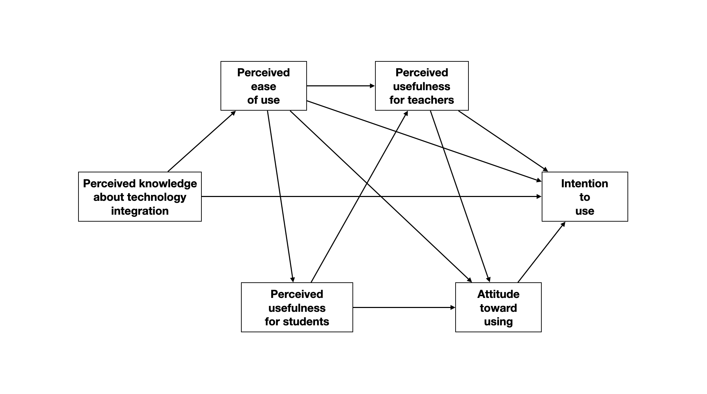

Assignment 03
Path Analysis
Instructions
Submit a printed document of your responses to the following questions. Please adhere to the following guidelines for further formatting your assignment:
- All plots should be resized so that they do not take up more room than necessary.
- All figures and tables should have a name (e.g., Figure 1) and an appropriate caption.
- All path models should be created digitally (e.g., using Keynote, Powerpoint, Word; No need to use R.)
In questions that ask you to “use matrix algebra” to solve the problem, you can either show your syntax and output from carrying out the matrix operations, or you can use Equation Editor to input the matrices involved in your calculations.
This assignment is worth 14 points.
Background
Taimalu and Luik (2021)1 used a path model to examine four research questions about “how perceived knowledge about technology integration, and beliefs and attitudes towards using technology, impact the intention to use technology among student teachers” (p. 1). Their model, which is based on the relevant literature is shown here:
They hypothesized that all the path coefficients would be positive. A questionnaire consisting of Likert-scale items related to six constructs was administered to 232 student teachers from the University of Tartu. These constructs, identified in the literature as influencing use of technology, include:
- Perceived knowledge about technology integration. These items measure the technological pedagogical knowledge (TPK), technological content knowledge (TCK), and technological pedagogical and content knowledge (TPACK).
- Perceived ease of use (e.g., I find computers easy to use; computer icons are easy to understand for me)
- Perceived usefulness of technology for students (e.g., using technology improves cooperation between the learners);
- Perceived usefulness of technology for teachers (e.g., using technology enhances my effectiveness);
- Attitude toward using technology in education (e.g., technology is valuable in teaching; every teacher must be able to use technology); and
- Intention to use (e.g., I intend to allow learners to use the technology to explore different topics; I intend to guide students to use the Internet to communicate with experts or other learners to enrich their learning experiences).
Composites (using a standardized scale) were created from the items for each construct and the correlation matrix fro these composites (shown below) was used to fit the proposed path model.
| 1 | 2 | 3 | 4 | 5 | 6 | |
|---|---|---|---|---|---|---|
| 1. Intention to use | --- | |||||
| 2. Perceived knowledge about technology integration | 0.219 | --- | ||||
| 3. Perceived ease of use | 0.33 | 0.669 | --- | |||
| 4. Perceived usefulness for students | 0.521 | 0.244 | 0.364 | --- | ||
| 5. Perceived usefulness for teachers | 0.454 | 0.309 | 0.462 | 0.56 | --- | |
| 6. Attitude toward using | 0.696 | 0.181 | 0.27 | 0.699 | 0.53 | --- |
Part 1: Regression from Summary Values
For the questions in this section, use the summary values provided to fit a regression to predict variation in intention to use (Model A). Include the predictors of intention to use declared in the path model. Show your syntax for each of these questions.
Compute the standardized regression coefficients for Model A.
Compute the \(R^2\), adjusted-\(R^2\) values for Model A.
Compute the estimated residual standard error for Model A.
Compute the standard errors for the regression coefficients for Model A.
Part 2: Simulate Data
- Simulate the study’s data based on the summary values provided. Assume multivariate normality among the measures. Show the first six rows of the simulated data. Also include your syntax. For reproducibility, set the random starting seed to 57.
Part 3: Path Analysis: All Hypothesized Paths
- Use the data you simulated in Part 2 to fit all the relevant regression models in the path analysis. Re-draw the path model and include all the estimated path coefficients, 95% confidence intervals associated with these coefficients, and all error terms/disturbances in the model. (3pts)
Part 4: Path Analysis: Empirically Supported Paths
Use the confidence intervals associated with the path coefficients to evaluate the researchers’ hypotheses that all the effects are positive. Based on these evaluations, re-draw the path model. Omit any paths for hypotheses in the model that are not empirically supported. (2pts)
Create a publishable quality table that includes the direct, indirect, and total effects for all of the potential causes of intended technology use in the updated path model. (2pts)
Consider the following research question: How does student teachers’ perceived ease of use of technology influence their intention to use technology in education?? Use the results from the updated path model to provide an answer to this question. Your response, written in prose (a few sentences), should clearly provide an answer to this question by drawing on the relevant effects in the updated path model. (2pts)
Footnotes
Luik, P., & Taimalu, M. (2021). Predicting the intention to use technology in education among student teachers: A path analysis. Education Sciences, 11(9), 564. https://doi.org/10.3390/educsci11090564↩︎